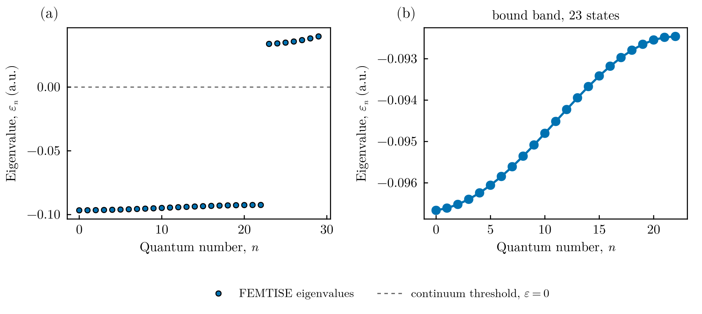
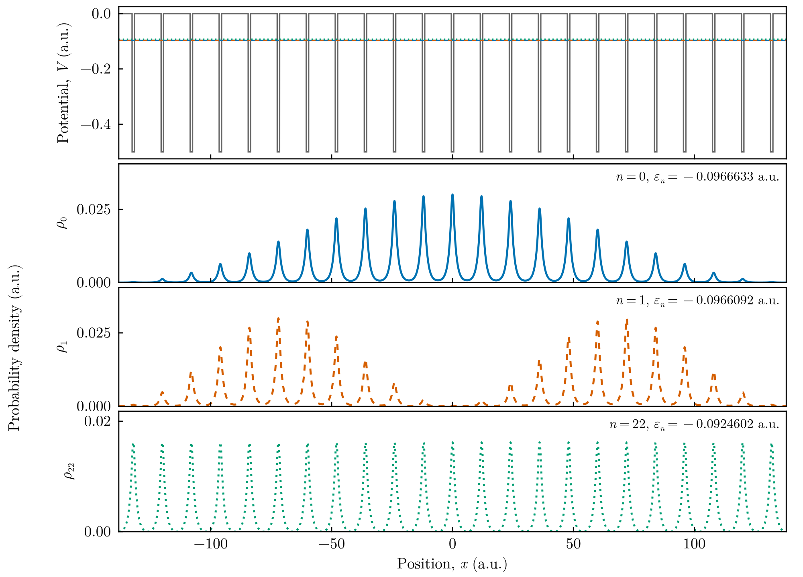

Finite Kronig–Penney chain
This tutorial computes the bound states of an electron in a finite chain of square wells, a minimal model of a one-dimensional crystal or of a semiconductor superlattice. In atomic units,
\[\hat H = -\frac{1}{2}\frac{d^2}{dx^2} + V(x),\qquad V(x) = \begin{cases} V_0 < 0 & \text{inside one of the } N \text{ wells (width } b\text{, centres separated by } a),\\ 0 & \text{otherwise.}\end{cases}\]
For an isolated well the single bound level lies at $\varepsilon\approx-0.095$. When $N$ such wells are coupled by tunnelling through the barriers, this level splits into $N$ levels that form a band. The potential is discontinuous, which the finite element method handles exactly as long as the mesh nodes coincide with the well edges.
All files are in src/symmetric_finite_1d_kronig_penney_potential/ of the FEMTISE_TUTORIAL repository.
1. The potential
adhoc_potential_function.jl builds the chain from the Heaviside function (symetric_kronig_penney) and provides it in the form required by the driver:
function kronig_penney_potential(x, params::Tuple)
num_ions, a, b, V₀ = params
return symetric_kronig_penney(x[1], num_ions, a, b, V₀)
end2. The input file
\[N = 23\]
wells of width $b = 1$ and depth $V_0 = -0.5$, with centres separated by $a = 12$, in the domain $(-138, 138)$. The element size $\Delta x = 0.01$ places a node exactly at every well edge. The shift sigma $=V_0$ is below all levels, so the 30 lowest eigenpairs are returned. The parameter types are i f f f because the number of wells is an integer:
full_path_name = ./output/kronig_penney
dom_type = s
nev = 30
dimension = 1D
sigma = -0.5
adhoc_file_name = ./adhoc_potential_function
potential_function_name = kronig_penney_potential
params_potential_types = i f f f
params_potential = 23 12.0 1.0 -0.5
analysis_param = false
output_format_type = jld2 eigen
## ONLY FOR 1D EIGENPROBLEMS
L = 276.0
Δx = 0.01
## ONLY FOR 2D EIGENPROBLEMS
Lx =
Ly =
nx =
ny =
different_masses =
reduced_density =3. Running the tutorial
julia --project=. setup.jl # once
julia --project=. src/symmetric_finite_1d_kronig_penney_potential/run_tutorial.jlThe script solves the problem, counts the bound states ($\varepsilon < 0$) and draws the spectrum and the densities of the bottom, second and top states of the band:
id, results = simulate("input")
ε, order = sorted_spectrum(results)
ϕ = results.ϕ[order]
bound = count(<(0.0), ε) # 23
states = (1, 2, bound)
densities = [n in states ? abs2.(sample_on_grid(ϕ[n], x)) : Float64[] for n in eachindex(ϕ)]
fig = plot_densities_stacked(x, densities, ε; potential = potential, states = states)
save_figure(fig, "figures", "kronig_penney_densities")4. Results

Spectrum. (a) The 30 computed levels. Exactly 23 of them, one per well, are bound ($\varepsilon<0$). The levels above the continuum threshold $\varepsilon = 0$ are states of the finite box. (b) Zoom on the bound band. The levels span $-0.0967 \le \varepsilon \le -0.0925$. Their spacing is smallest at the band edges, as in the cosine dispersion $\varepsilon(q)\simeq\varepsilon_0-2t\cos(qa)$ of a tight-binding chain.

Eigenfunctions. Top: the potential with the energies of the three states shown below (horizontal lines). The densities are concentrated in the wells and modulated by a slowly varying envelope. The bottom of the band ($n=0$) has a nodeless envelope, like the ground state of a particle in a box of length $Na$. The next state ($n=1$) has one node of the envelope. The top of the band ($n=22$) distributes its weight almost uniformly over all wells.
5. Going further
- Band formation. Repeat the calculation with $N = 1, 3, 5, \dots$ wells: the single level of one well splits into $N$ levels, which fill a band of fixed width as $N$ grows. The width of the band decreases exponentially with the barrier width $a-b$.
- Mesh alignment. If the well edges do not coincide with mesh nodes, the convergence of the eigenvalues drops from $h^4$ to $h$; see the accuracy guide.